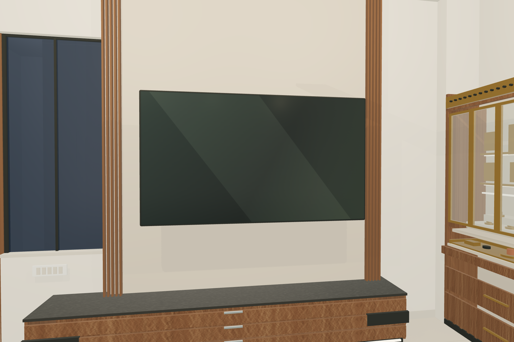

JAIPUR HOME · COORDINATED MAIN MODEL
The ceiling-height backing clears the window, the low console reaches the window centreline, the TV is mounted 1 ft higher, the AC and main controls are wall-mounted correctly, and the sofa has an illuminated walnut service plank with integrated switches and charging.
Explore the TV wallDownload the 3D modelThe approved kitchen, puja unit and other rooms remain in the walkthrough. Switch between daylight and evening lighting, walk inside the model or save any view as an image.

TV-wall geometry updated on 23 September 2026. The architect’s window, walls, columns, shafts and 10 ft ceiling are retained. Site measurement and coordinated shop drawings remain mandatory before fabrication.